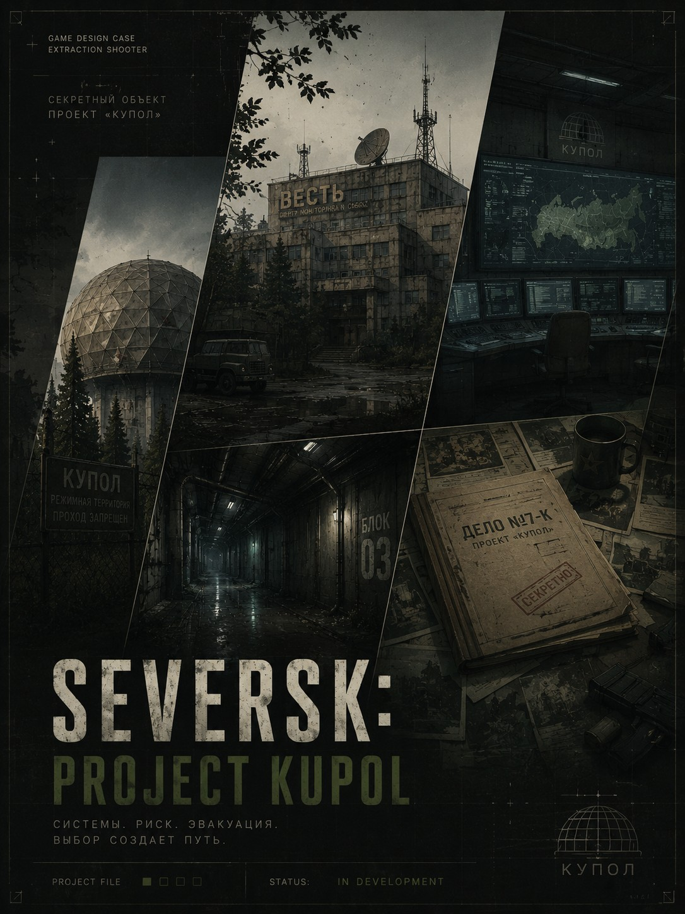

PvPvE Extraction Shooter
SEVERSK: PROJECT KUPOL
Концепт PvPvE extraction shooter в современной России. Основной акцент проекта — напряжённые рейды, атмосфера изолированного региона, риск, тактическое взаимодействие и мир, который постепенно раскрывается через исследование.

Лор
Изолированный регион. Локальный кризис. Неполная правда.
Действие разворачивается вокруг закрытого промышленного района и объекта «Купол». После серии аварийных сигналов, пропажи групп мониторинга и внезапного усиления режима территорию выводят из публичного поля и фактически отрезают от внешнего мира.
Регион изолирован не из-за глобальной катастрофы, а из-за локального кризиса, который слишком опасно объяснять напрямую: связь нестабильна, маршруты контролируются, а официальные документы противоречат следам, найденным внутри зоны.
Игрок попадает туда через рискованные рейды — за данными, ресурсами, контрактами и ответами. Главная тайна проекта в том, что именно скрывает «Купол» и почему разные стороны готовы рисковать людьми, чтобы первыми вынести правду из изоляции.
Концепция проекта
Рейд как история риска
SEVERSK задуман как extraction shooter про напряжение перед каждым решением: идти глубже, сохранить добычу, помочь напарнику или выйти, пока ещё можно.
Атмосфера проекта строится не на глобальном апокалипсисе, а на реалистичном чувстве изоляции, серых зон, закрытых объектов и региона, который постепенно начинает говорить через детали окружения.
Документация
ДОКУМЕНТАЦИЯ ПРОЕКТА
Проект находится на ранней стадии разработки. В настоящее время формируется игровая вселенная, концепция и фундамент дизайн-документа. Полная документация появится по мере развития проекта.